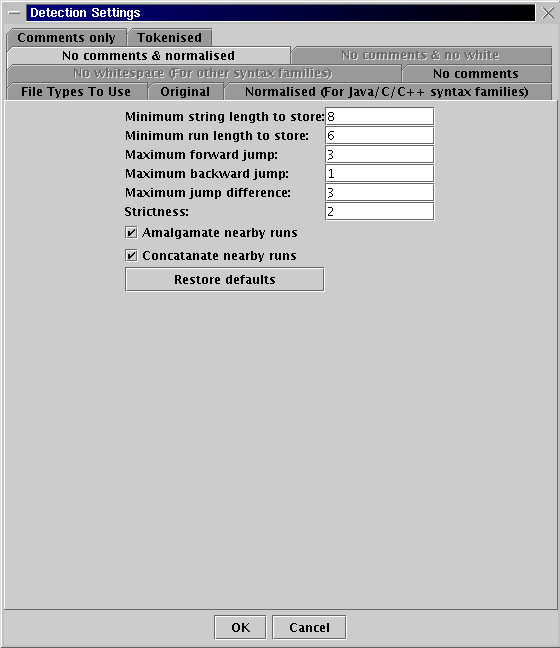

Detection Setting Parameters (match sensitivity)
These settings affect the source-code detection algorithms.
Sherlock allows different levels of matching sensitivity
between pair of submissions for each line and region
(a region being several continuous lines of coding).
Each pre-processing file type can have its own matching sensitivity
by changing the detection settings individually.
Before start the comparisons
-Click the "Pre-process File" button or "Start complete search..." in the detection section
-and click the desired the file type name in the tabbed pane
-Then change the values in the text box.
- Minimum String Length to Store: Lines which have less characters than
this number will be ignored.
- Minimum Run Length to Store: Runs shorter than this number will be
ignored.
- Maximum Forward Jump: How far to look forward for a matching line
when one pair of lines has matched.
- Maximum Backward Jump: How far to look backward for a matching line
when one pair of lines has matched.
- Maximum Jump Difference: How much the jumps in the two different
files can vary in length.
- Strictness: How strict the algorithm is.
- Amalgamate Nearby Runs: Whether overlapping runs should be made into
one bigger run.
- Concatenate Nearby Runs: Whether runs which are close together should
be concatenated.
All the default setting values can be re-obtained by clicking "Restore defaults".
Detection Setting Parameter Window for changing the matching sensitivity
